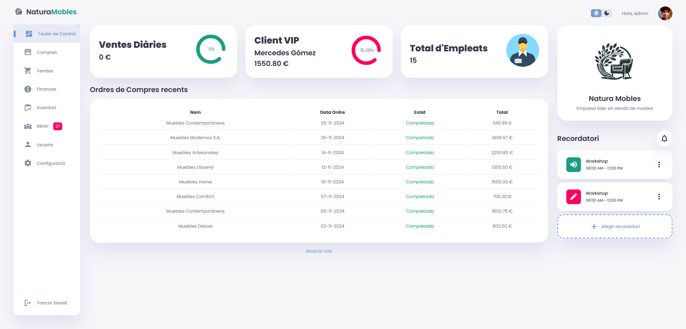

👋 I'm a Full Stack Developer focused on backend. I primarily work with Java, MySQL, HTML, and CSS to build solid and efficient applications. I use Git to maintain an organized workflow and collaborate with teams.
My Skills
My Expertise
Backend
🔧 I have been programming with Java for 2 years, developing robust and scalable applications.
I work with frameworks like Spring Boot and focus on writing clean, efficient, and well-structured code.
Frontend
I have worked with HTML and CSS to create attractive and functional interfaces,
and I have used JavaScript to add interactivity and dynamism to the applications.
Data Base
For my applications, I have used MySQL for data management and also implemented MongoDB in projects that require NoSQL databases.
Utils
For planning, I have used tools like Trello and Figma, and for version control, I have worked with GitHub to manage and organize the development of the projects.
About
About Me
I'm a passionate developer with a strong background in Cross-Platform Application Development. I have completed a Higher Education Program in this field, which has provided me with a solid technical foundation.
During my professional internship, I worked as a programmer developing various applications, allowing me to apply my knowledge to real projects.
Additionally, I am always looking to improve my skills. I have taken self-taught courses in Git, Visual Studio, HTML, CSS, and more to stay updated with the latest technologies and development practices.
My goal is to continue learning, enhance my skills, and contribute to projects that challenge me to grow as a professional.
Recent Projects
My Portfolio

ERP
ERP for a furniture company, developed with Java, Spring Boot, MySQL, MongoDB, CSS, HTML, and JavaScript